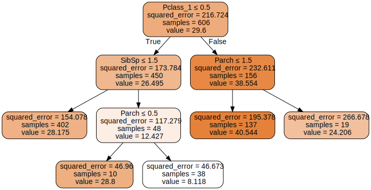
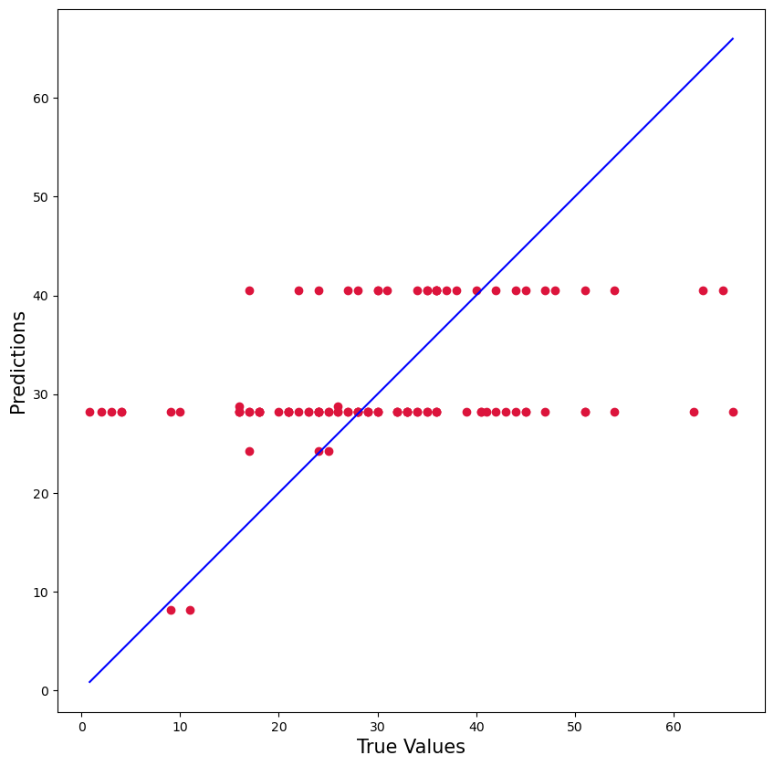
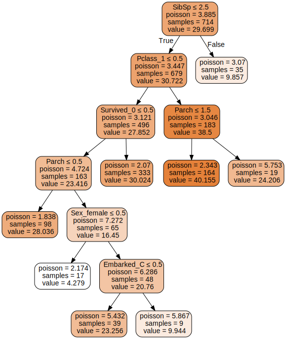
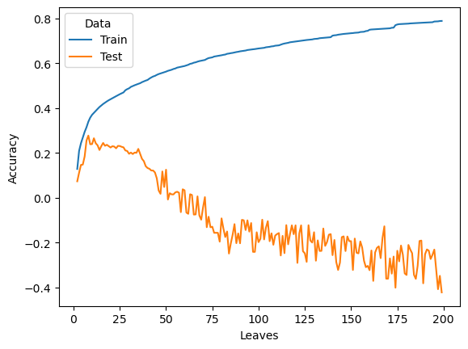
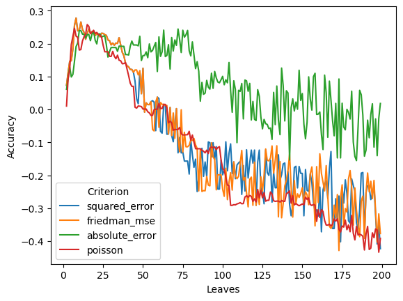

# import some packages
import pandas as pd
import numpy as np
from sklearn import tree
from sklearn import metricsDecision Trees - Regression
Installation: You will need to install python and jupyter. The easiest way is to install the package Anaconda as follows.
Download Anaconda from this link
Install Anaconda from the downloaded file
Open Jupyter Lab by
- Click to the Start Windows Logo and Type in Anconda Promp. Open Anaconda Promp
- In Anaconda Promp, type in:
jupyter laband hit Enter
- In Anaconda Promp, type in:
Install the
graphvizpackage- Open Anaconda Prompt.
- Type in:
conda install python-graphviz
Data: The data should be in the same folder as the notebook.
1. An example of training a decision tree
We will go over the above steps to train decision tree with the titanic dataset. Notice that these codes can be reused for other dataset. The codes for Step 1, 4, 5, 6, and 7 should be the same or at least similar when applied to other data. Only Step 2 and Step 3 will be different from data to data.
Step 1: Import and Clean Data
# Import the data
df = pd.read_csv('titanic.csv')# Check the variables
df.columnsIndex(['PassengerId', 'Survived', 'Pclass', 'Name', 'Sex', 'Age', 'SibSp',
'Parch', 'Ticket', 'Fare', 'Cabin', 'Embarked'],
dtype='object')Check and fix variable types
df.dtypesPassengerId int64
Survived int64
Pclass int64
Name object
Sex object
Age float64
SibSp int64
Parch int64
Ticket object
Fare float64
Cabin object
Embarked object
dtype: object# Change Pclass and Survived to categorical variables
df['Pclass'] = df['Pclass'].astype(object)
df['Survived'] = df['Survived'].astype(object)Step 2: Check and handle missing values
df.isna().sum()PassengerId 0
Survived 0
Pclass 0
Name 0
Sex 0
Age 177
SibSp 0
Parch 0
Ticket 0
Fare 0
Cabin 687
Embarked 2
dtype: int64# Drop all rows with missing values in Age
# df[df['Age'].notna()]
df = df.dropna(subset=["Age"])# Impute the Embarked variable
df["Embarked"] = df["Embarked"].fillna("S")Assign the input and output variable
# Assign input variables
X = df.loc[:,['Pclass','Sex','Survived','Fare','Embarked','SibSp','Parch']]
# Assign target variable
y = df['Age']Step 3: Encode Categorical Variables
sklearn does not work directly with categorical variables. It requires the categorical variables to be encoded into numeric variables. There are multiple way to encode categorical variables. Here, we implement the simplest way of encoding: one-hot encoding or dummy encoding.
# Encode categorical variable
X = pd.get_dummies(X)Step 4: Split the data into training and testing
from sklearn.model_selection import train_test_split
x_train,x_test,y_train,y_test=train_test_split(X,y,test_size=0.15)Step 5: Train a model
# Create a decision tree and train
from sklearn.tree import DecisionTreeRegressor
tree1 = DecisionTreeRegressor(criterion='squared_error', max_leaf_nodes=5)
tree1.fit(x_train, y_train)DecisionTreeRegressor(max_leaf_nodes=5)In a Jupyter environment, please rerun this cell to show the HTML representation or trust the notebook.
On GitHub, the HTML representation is unable to render, please try loading this page with nbviewer.org.
DecisionTreeRegressor(max_leaf_nodes=5)
Plot the tree
# conda install graphvizfrom sklearn import tree
import graphviz
dot_data = tree.export_graphviz(tree1, out_file=None)
dot_data = tree.export_graphviz(tree1, out_file=None,
feature_names=x_train.columns,
class_names=['Not Survived','Survived'],
filled=True, rounded=True,
special_characters=True)
graph = graphviz.Source(dot_data)
graph
Step 6: Test the model
Plot
import matplotlib.pyplot as plt
predicted_value = tree1.predict(x_test)
true_value = y_test
plt.figure(figsize=(10,10))
plt.scatter(true_value, predicted_value, c='crimson')
p1 = max(max(predicted_value), max(true_value))
p2 = min(min(predicted_value), min(true_value))
plt.plot([p1, p2], [p1, p2], 'b-')
plt.xlabel('True Values', fontsize=15)
plt.ylabel('Predictions', fontsize=15)
plt.axis('equal')
plt.show()
Rsquare
from sklearn.metrics import r2_score
print('Rsquared on Testing: ', np.round(r2_score(y_test, tree1.predict(x_test)), 3))Rsquared on Testing: 0.148Mean Percentage Errors
Step 7: Hyperparameters Tuning and redo Step 5 and 6
How do we know the selection of max_leaf_nodes and criterion in Step 5 is the best selection?
Tuning hyperparameters or Tuning a model is to search for the set of hyperparameters that works the best. To tune a model, one first needs to know what the hyperparameters/tuning parameters that the model has. A model may have several hyperparamters that sometime it is not practical to tune all the hyperparameters.
Our model here is decision tree. To see the list of tuning parameters of decision trees, one can check at the sklearn document of the model. One way to find out is to google: DecisionTreeRegressor and sklearn. This search brings us to this link.
From the link, you can see the list of (hyper)parameters. In this example, we will tune two parameters max_leaf_nodes and criterion.
import warnings
warnings.filterwarnings("ignore")
# Decide what hyperparameter to tune then decide the searching range
param_grid = {'max_leaf_nodes': range(2,10),
'criterion':['squared_error', 'friedman_mse', 'absolute_error', 'poisson']}
# Create a list of trees
from sklearn.model_selection import GridSearchCV
tree2 = GridSearchCV(DecisionTreeRegressor(), param_grid, cv = 5)
tree2.fit(x_train, y_train)GridSearchCV(cv=5, estimator=DecisionTreeRegressor(),
param_grid={'criterion': ['squared_error', 'friedman_mse',
'absolute_error', 'poisson'],
'max_leaf_nodes': range(2, 10)})In a Jupyter environment, please rerun this cell to show the HTML representation or trust the notebook. On GitHub, the HTML representation is unable to render, please try loading this page with nbviewer.org.
GridSearchCV(cv=5, estimator=DecisionTreeRegressor(),
param_grid={'criterion': ['squared_error', 'friedman_mse',
'absolute_error', 'poisson'],
'max_leaf_nodes': range(2, 10)})DecisionTreeRegressor()
DecisionTreeRegressor()
In the above code, cv=5 means the cross validation is done with 5 folds. This means that the training data will be partition into 5 pieces and each piece will be used as a validation data while the remaining four pieces will be used as the data to build model.
More informatiom about k-fold cross validation can be seen here
In this example, with 10 different values of max_leaf_nodes (2 to 9), and 2 different values of criterion, there will be 8x2=16 models (trees) will be tested. Each of these 16 models will be run 5 times (since cv=5). Thus, in total, there will be 16x5=80 times a tree is computed. The search for the best parameters could be time consuming!
cv_result = pd.concat([pd.DataFrame(tree2.cv_results_["params"]),pd.DataFrame(tree2.cv_results_["mean_test_score"], columns=["Accuracy"])],axis=1)
cv_result['Rank'] = (-cv_result['Accuracy']).argsort().argsort()
cv_result| criterion | max_leaf_nodes | Accuracy | Rank | |
|---|---|---|---|---|
| 0 | squared_error | 2 | 0.070931 | 30 |
| 1 | squared_error | 3 | 0.174288 | 26 |
| 2 | squared_error | 4 | 0.192348 | 20 |
| 3 | squared_error | 5 | 0.212484 | 15 |
| 4 | squared_error | 6 | 0.248670 | 10 |
| 5 | squared_error | 7 | 0.270836 | 5 |
| 6 | squared_error | 8 | 0.268714 | 7 |
| 7 | squared_error | 9 | 0.272819 | 3 |
| 8 | friedman_mse | 2 | 0.070931 | 29 |
| 9 | friedman_mse | 3 | 0.174288 | 25 |
| 10 | friedman_mse | 4 | 0.192348 | 19 |
| 11 | friedman_mse | 5 | 0.212484 | 16 |
| 12 | friedman_mse | 6 | 0.248670 | 11 |
| 13 | friedman_mse | 7 | 0.270836 | 6 |
| 14 | friedman_mse | 8 | 0.268714 | 8 |
| 15 | friedman_mse | 9 | 0.272819 | 2 |
| 16 | absolute_error | 2 | 0.055357 | 31 |
| 17 | absolute_error | 3 | 0.177781 | 24 |
| 18 | absolute_error | 4 | 0.169495 | 27 |
| 19 | absolute_error | 5 | 0.187097 | 21 |
| 20 | absolute_error | 6 | 0.185917 | 22 |
| 21 | absolute_error | 7 | 0.202552 | 17 |
| 22 | absolute_error | 8 | 0.201089 | 18 |
| 23 | absolute_error | 9 | 0.214657 | 14 |
| 24 | poisson | 2 | 0.076008 | 28 |
| 25 | poisson | 3 | 0.183993 | 23 |
| 26 | poisson | 4 | 0.215785 | 13 |
| 27 | poisson | 5 | 0.229487 | 12 |
| 28 | poisson | 6 | 0.256681 | 9 |
| 29 | poisson | 7 | 0.274065 | 1 |
| 30 | poisson | 8 | 0.280066 | 0 |
| 31 | poisson | 9 | 0.271105 | 4 |
The above shows that the best hyperparameters are criterion=entropy and max_leaf_nodes=7. We can use this information to redo step 5.
tree3 = DecisionTreeRegressor(**tree2.best_params_)
# Train with the selected hyperparameter
tree3.fit(X, y)
print('Best Tree is:', tree2.best_params_)
print('')
import graphviz
dot_data = tree.export_graphviz(tree3, out_file=None)
dot_data = tree.export_graphviz(tree3, out_file=None,
feature_names=x_train.columns,
class_names=['Not Survived','Survived'],
filled=True, rounded=True,
special_characters=True)
graph = graphviz.Source(dot_data)
graphBest Tree is: {'criterion': 'poisson', 'max_leaf_nodes': 8}

2. Overfitting in Decision Trees
Training Accuracy vs. Testing Accuracy
We analyze the accuracy of Decision Tree when the spliting criterion and the number of leaves (max_leaf_nodes) change. These two parameters are also called hyper-parameters or tuning parameters.
The following plot shows that the training accuracy will increase when the number of leaves (max_leaf_nodes) increase. The testing accuracy increases at the beginning and decreases or isolating in the long run.
The next plot shows that the selection of criterion also impact model performance.
criterion = ['squared_error', 'friedman_mse', 'absolute_error', 'poisson']
max_leaf_nodes = range(2, 200)
#erros_plot = function(criterion, )
rs = pd.DataFrame(columns = ['Criterion','Leaves', 'Data','Accuracy'])
for criterion1 in criterion:
for max_leaf_nodes1 in max_leaf_nodes:
tree1 = DecisionTreeRegressor(criterion=criterion1, max_leaf_nodes=max_leaf_nodes1)
tree1.fit(x_train, y_train)
new_row={'Criterion':criterion1,'Leaves':max_leaf_nodes1, 'Data':'Train','Accuracy':tree1.score(x_train, y_train)}
rs = pd.concat([rs, pd.DataFrame([new_row])], ignore_index=True)
new_row={'Criterion':criterion1,'Leaves':max_leaf_nodes1, 'Data':'Test','Accuracy':tree1.score(x_test, y_test)}
rs = pd.concat([rs, pd.DataFrame([new_row])], ignore_index=True)# Plot the training and testing accuracy of the model when criterion = gini
import seaborn as sns
rs_gini = rs[rs['Criterion']=='squared_error']
sns.lineplot(data=rs_gini, y="Accuracy", x="Leaves", hue='Data', ci=None)<Axes: xlabel='Leaves', ylabel='Accuracy'>
# Compare the impact of the criterion on tetsing accuracy
sns.lineplot(data=rs[rs['Data']=='Test'], y="Accuracy", x="Leaves", hue='Criterion') <Axes: xlabel='Leaves', ylabel='Accuracy'>
3. Practice - Extra Credit 2
Following the sample codes at this link to do/answer the below.
- Import the breast cancer dataset. The data can be downloaded at this link
- Check out the missing values in each columns
- Set the input (X) and output (y). Split the data into 80% training and 20% testing
- Train a decison tree with the max leaves of 4 using
entropyas the criteria for spliting - Calculate the testing error of the above tree
- Search for the best hyperparameters of decision where the max leaves runs from 3 to 12 and the criteria runs between
giniandentropy - What are the best hyperparameters found after the search
- Train a decision tree using the best hyperparameters.
- (Optional) Plot the tree above.
- Export the notebook for submission: File -> Export Notebook As -> Export Notebook to html. Then submit it to Canvas. If you can optionally submit the .ipynb instead of the html format.